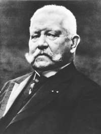

Paul Von Hindenburg (1847-1934)

Almanlarýn meþhur generali, siyaset ve devlet adamýdýr. Birinci Dünya Savaþý baþladýktan bir süre sonra genel komutan olmuþ ve özellikle Fransýzlarýn maðlup edilmesinde önemli etkisi olmuþtur. Savaþýn sonunda Almanya'da imparatorluk rejiminin yýkýlmasý ve cumhuriyetin ilanýndan sonra siyasi faaliyetleri devam etmiþtir. 1925 yýlýnda Almanya'nýn cumhurbaþkanlýðýna getirilen ikinci kiþidir. Devletin en kritik döneminde ve istikrarsýzlýðýn en yoðun yaþandýðý yýllarda cumhurbaþkanlýðý yapmýþtýr. Risale-i Nur'da Hindenburg'dan, Osmanlý Devleti'nin Birinci Dünya Savaþýna giriþinin sorgulanmasý baðlamýnda bahsedilmiþtir. "Madem savaþý kaybedecektik niçin girdik?" gibi sorularla cerbeze yapanlara; "Hindenburg gibi dehþetli insanlar nazarýna nazarî kalmýþ olan gaye-i harp, sizin gibi acemîlere nasýl malûm ve bedihî olabilir?" (Sünuhat, s. 70) denilerek savaþa girmeden sonucu tahmin etmenin mümkün olmadýðý anlatýlmak istenmiþtir.Hindenburg, 1847 yýlýnda Poznan'da doðdu. Harp okulunu bitirip mezun oldu. Bu yýllarda Alman birliðinin temelleri atýlmakta ve seri savaþlar yapýlmaktaydý. O da yapýlan savaþlara katýldý. Önce 1866 yýlýnda Avusturya ile yapýlan savaþa, daha sonra da 1870-1871 yýllarýnda Fransýzlarla yapýlan savaþa piyade olarak katýldý. Moltke ve Schlieffen döneminde genelkurmay heyetinde yer aldý. Bir ara bakanlýk görevinde de bulundu. Magdeburg'da bulunan 4. Kolordu komutanlýðý görevinden sonra 1911 yýlýnda emekli oldu.
Dünya, meydana gelen bloklaþma ve sömürge paylaþým mücadelesi yüzünden yavaþ yavaþ sýcak savaþa doðru sürüklenmekteydi. Bunda aktif rol oynayan ülkelerden birisi de Almanya idi. Birinci Dünya Savaþý ittifak ve itilaf devletleri arasýnda baþladý. Savaþ sýrasýnda Doðu Prusya'da bulunan ordularýn baþýnda Prittwitz bulunmaktaydý. Bunun Ruslarý Doðu Prusya'da durduramayacaðý anlaþýldýktan sonra yerine Hindenburg göreve çaðrýldý. Böylece, emekli olduðu halde tekrar askeri göreve dönmüþ oldu.
Hindenburg, 8. Ordunun baþýna geçti. Tannenberg'te ve Mazurya Gölünde Ruslarý yendi. Baþkomutan Falkenhayn'ýn ýsrarlarýyla Varþova saldýrýsýný gerçekleþtirdi. Kasým 1914 tarihinde Doðu Kuvvetleri Komutanlýðýna atandý. Mazurya'da ikinci kez Ruslarla savaþtý ve bir kez daha onlarý yendi. 1915 yýlýnda gerçekleþtirilen Polonya seferi sýrasýnda, Ruslarýn geri kuvvetlerini vurma ve sað kanatlarýný yarma görevini üstlendi, ancak baþarýlý olamadý. Bu baþarýsýzlýkta takviye alamamasý ve Ruslarýn saldýrýlarý etkili oldu.
Hindenburg, 1916 Aðustosunda Falkenhayn'ýn yerine baþkomutanlýða getirildi. Bu görevi sýrasýnda Ludendorff ile baþarýlý bir birliktelik ve iþbirliði oluþturdu. Bu birliktelikte daha çok sorumluluk kendi omuzlarýndaydý. 1916 Ekiminde Romanya'yý yendi. Avusturya'ya yardým götürmek maksadýyla Batý cephesine aðýrlýk verdi. Bu arada Romanya ve Rusya'yý ateþkes yapmaya zorladý. Daha sonra tüm birliklerini Fransa üzerine göndererek büyük bir saldýrýya geçti. Ancak, müttefiklerin cephesini bozmayý ve daðýtmayý baþaramadý. Savaþ Almanya'nýn aleyhine dönmeye baþladýktan sonra, hanedanýn kurtarýlmasý için Ýmparatora tahttan çekilme tavsiyesinde bulundu. Savaþýn sona ermesi ve 1919'da Versailles Anlaþmasýnýn imzalanmasýndan sonra Hannover'e gidip yerleþti.
Birinci Dünya Savaþýndan sonra Almanya'da imparatorluk rejimi sona erdi. 6 Ocak 1919 tarihinde Weimar'da toplanan Milli Meclis Friedrich Ebert'i cumhurbaþkaný olarak seçti. Bu meclis Versailles Barýþ Antlaþmasýný da onayladý. Mecliste çoðunluðu sosyal demokratlar teþkil etmekteydi. Birinci Dünya Savaþý'nýn maðluplarýna ödetilen fatura çok aðýrdý. Almanya da bu aðýrlýðýn etkisiyle çok büyük sýkýntýlar yaþadý. Ülkedeki ekonomik sýkýntýlar karýþýklýklarýn giderek artmasýna ve aþýrý uçlarýn güçlenerek iktidarý etki altýna almasýna sebep oldu. Weimar Cumhuriyeti ancak 1934 yýlýna kadar devam edebildi.
Hindenburg, Birinci Dünya Savaþý'ndan sonra da ülke siyasetinde etkisini devam ettirdi. Ebert'in ölümünden sonra 1925 yýlýnda cumhurbaþkanlýðýna seçildi. Ölümüne kadar sürdürdüðü bu görevi sýrasýnda ülkede çok büyük çalkantýlar yaþandý. Ekonomik sýkýntý, mecliste çoðunluðu teþkil edecek ve hükümet çoðunluðunu oluþturacak siyasi iradenin oluþmamasý gibi sebeplerden ötürü barýþ antlaþmasýný onaylayan ve iktidarý devam ettirenlere karþý hoþnutsuzluk giderek arttý. 1929 dünya ekonomik krizi Almanya'nýn sýkýntýlarýný daha da arttýrdý. Bu kriz ortamýný en çok kullanan ve en çok istifade eden aþýrý saðcý ve solcu guruplar oldu.
Hindenburg, anayasaya sýký bir þekilde baðlýlýk göstermesine raðmen Weimar Cumhuriyetinin çöküþünü engelleyemedi. 1920 yýlýnda kurulan ve giderek güçlenen Adolf Hitler'in partisi ülkenin hakimiyetini ele geçirmeye ve etkisini arttýrmaya baþladý. 1930'dan sonra hýzla güçlendi. 1932 yýlýnda en güçlü parti oldu. 30 Ocak 1933'te baþbakan olan Adolf Hitler, yetkilerini giderek arttýrdý. Hindenburg, yetkilerinin azaltýlmasýna ve Hitler'in güçlenmesine engel olamadý. 1934 yýlýnda ölünce Hitler, devlet baþkanýn yetkilerini de üstüne aldý ve ülkenin tek hakimi oldu.
Birinci Dünya Savaþý'ndan sonra Ýttihad ve Terakki hakkýnda yapýlan yorumlarda çoðu zaman ölçü kaçýrýlmýþ ve aðýr ithamda bulunanlar olmuþtur. Bediüzzaman, iktidarda bulunduklarý dönemde onlarý eleþtirip ayný zamanda yol göstermeye çalýþtý. Devletin savaþtan yenik çýkmasý, bütün faturanýn da Ýttihad ve Terakki'ye kesildiði dönemlerdeki haksýz eleþtirilere ise karþý çýktý. Çünkü, eleþtirinin hakkaniyet ölçüsünde olmayýp onlarýn güzel hasletlerine de hücum edildiði bir mecraya kaydýðýný, ayrýca Ýslam düþmanlarýnýn ekmeðine yað sürer hale gelindiðini belirterek ikazda bulunmuþtur. Muhaliflerin, "Maðlûbiyet mâlûmdu, biz bilirdik. Bilerek bizi belâya attýlar" þeklindeki soru ve ithamlarýna karþýlýk Hindenburg örneðini vermektedir:
"Acaba Hindenburg gibi dehþetli insanlar nazarýna nazarî kalmýþ olan gaye-i harp, sizin gibi acemîlere nasýl malûm ve bedihî olabilir? Acaba fikir dediðiniz þey-el'iyazü billâh-arzu olmasýn? Bazan zâlimane intikam-ý þahsî, arzuya fikir suretini giydirir." (Sünuhat, s. 70) Bediüzzaman, bu tespitiyle savaþta müessir olan þahýslarýn bilerek ve kasten devleti, güya sonucu belli olan bir felakete sürüklemeyeceklerini, savaþ dahilerinin bile sonucu kestiremedikleri bir savaþ hakkýnda, böyle hüküm vermenin cehalet göstergesi olduðunu ima etmektedir. Bu arada, muhalefet ve tarafgirliðin çok tehlikeli bir boyutuna iþaret etmekte, vebalini ancak haþirdeki terazinin tartabileceði büyük bir günaha da örnek vermektedir.
"Meselâ, muhteris bir intikam veya müntakim bir hilâfla bir kere demiþ: 'Ýslâm maðlûp olacak, kalbi parçalanacak.' Sýrf o mürâi ruhtan gelen, yalancý fikirden çýkan meþ'um sözünü doðru göstermek için, Ýslâm maðlûbiyetini, Ýslâm periþaniyetini arzu eder, alkýþlar, hasmýn darbesinden mütelezziz olur. Ýþte þu alkýþý ve gaddar telezzüzüdür ki, mecruh Ýslâmý müþkül mevkide býrakmýþ. Zira hançerini Ýslâmýn ciðerine saplamýþ olan hasým, 'Sükût et' demiyor. 'Alkýþla, mütelezziz ol, beni sev' diyor, onlarý misal gösteriyor." (Sünuhat, s. 69-70)